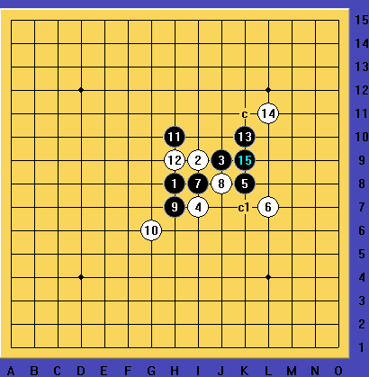

妖刀-常规-山口再来两题
#1 妖刀-常规-山口再来两题 作者：日月丽天 发表时间：2014-5-25 13:54:20
黑先，看有没有人地毯出来?（地毯了有奖励)
#2 Re:妖刀-常规-山口再来两题 作者：炫飞缘灭 发表时间：2014-5-25 16:21:48
刚看到这个题 拆了一小会 还剩点牵制没扫完 要出去买菜了 不扫了 不知道牵制能否地毯#3 Re:妖刀-常规-山口再来两题 作者：山城刀客 发表时间：2014-5-25 19:50:33

按照缘灭的思路拆了拆，感觉难度太大，无意间发现了这个杀，难点在于21，只有21手找对了，后面行云流水就地毯了。
［ 逆刃 于 2014-5-25 20:24:23 时奖励此帖[金币加 100 威望加1］
［ 日月丽天同学于 2014-5-26 8:19:09 时花20金币送鲜花一朵］
［ 日月丽天同学于 2014-5-26 8:19:09 时花20金币送鲜花一朵］
［ 日月丽天同学于 2014-5-26 8:19:09 时花20金币送鲜花一朵］
［ 日月丽天同学于 2014-5-26 8:19:09 时花20金币送鲜花一朵］
［ 日月丽天同学于 2014-5-26 8:19:09 时花20金币送鲜花一朵］
#4 Re:妖刀-常规-山口再来两题 作者：日月丽天 发表时间：2014-5-26 8:18:44
厉害，这么特别的题，也解答出来了，这题就是7手开始先连攻，攻到17时做棋，还剩余一个强防18，之后19继续精彩vct完成必胜，一系列过程，软件就是带不了路，要么就带偏，特别在13手怎么走时，隐藏的杀法，完全要自己找才行。#5 Re:妖刀-常规-山口再来两题 作者：日月丽天 发表时间：2014-5-26 8:25:01
这个变化，其实一直还有唯一强防6
第二题，也就是这个未解题了，看能不能解决，或者说还是不是必胜棋，有奖竞猜吧
#6 Re:山城刀客【==Re:妖刀-常规-山口再来两题==】 作者：炫飞缘灭 发表时间：2014-5-30 11:53:08
可以地毯的
 7.rar
7.rar
［ 山城刀客同学于 2014-5-30 12:44:06 时花20金币送鲜花一朵］
［ 山城刀客同学于 2014-5-30 12:44:06 时花20金币送鲜花一朵］
［ 山城刀客同学于 2014-5-30 12:44:06 时花20金币送鲜花一朵］
［ 山城刀客同学于 2014-5-30 12:44:06 时花20金币送鲜花一朵］
［ 山城刀客同学于 2014-5-30 12:44:06 时花20金币送鲜花一朵］
［ 日月丽天 于 2014-5-30 14:56:22 时奖励此帖[金币加 100 威望加1］
［ 日月丽天同学于 2014-5-30 14:56:44 时花20金币送鲜花一朵］
［ 日月丽天同学于 2014-5-30 14:56:44 时花20金币送鲜花一朵］
［ 日月丽天同学于 2014-5-30 14:56:44 时花20金币送鲜花一朵］
#7 Re:妖刀-常规-山口再来两题 作者：饭饭 发表时间：2014-9-19 19:22:00
看看